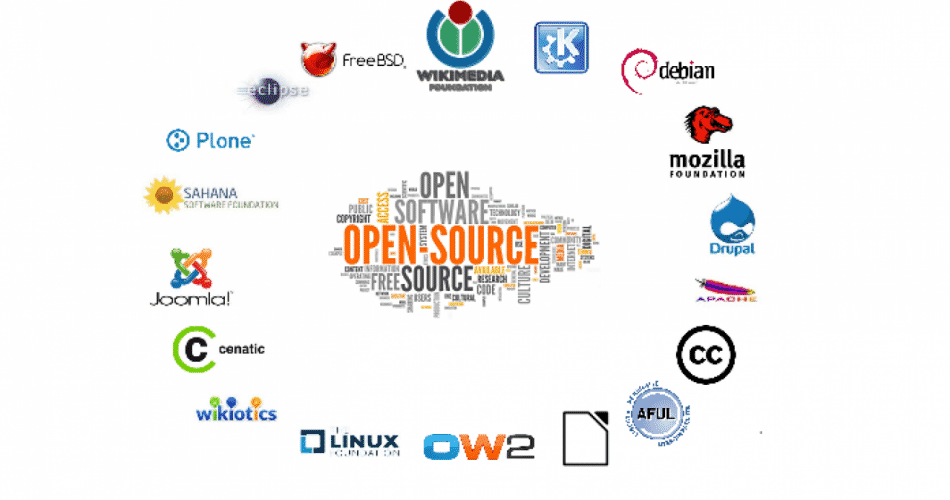

Processo Histórico da Big Data
Assim como todas as tecnologias, a Big Data está em constante evolução e continuará
evoluindo durante muito tempo, aqui temos os principais pontos históricos de crescimento dessa tecnologia :
1663
Big Data primitiva
John Graunt (um cientista e um demógrafo britânico) utilizou uma grande quantidade de diversos conhecimentos de diversos lugares para estudar a grande epidemia da peste bubônica, dando assim, o primeiro relato do uso de estatísticas.
1890
Foram utilizados os primeiros instrumentos para processar dados, na realização do Censo dos Estados Unidos.
1927
Começaram a surgir os primeiros sistemas para armazenamento dessas informações através de fitas magnéticas, um método criado pelo engenheiro Fritz Pfleumer.
1943
foi desenvolvida a primeira máquina digital para processar dados, seu nome era Colossus, feita por soldados ingleses na intenção de decifrar códigos da Alemanha nazista, tendo assim a capacidade de interceptar mensagens em uma taxa de 5000 caracteres por segundo.
1952
Foi fundado o primeiro órgão público, específico para o uso e processo de dados na intenção de obter informações relativas a inteligência, a NSA (National Security Agency), nos EUA.
1960
O Início da evolução
A empresa IBM investiu fortemente em pesquisas para problemas dos bancos de dados digitais primitivos. Vários modelos de bancos de dados surgiram nesta época, dentre eles os modelos hierárquico e rede.
1970
Edgar Frank
o pesquisador Edgar Frank "Ted" Codd da IBM, mudou a história dos bancos de dados apresentando o modelo relacional no artigo intitulado "A Relational Model of Data for Large Shared Data Banks", onde o autor apresentou uma forma de usuários sem conhecimento técnico armazenarem e extraírem grandes quantidades de informações de um banco de dados. Este artigo foi o grande impulso para a evolução dos bancos de dados, a partir do artigo de "Ted" Codd que os cientistas aprofundaram a ideia de criar o modelo de banco de dados relacional.
1980
Só em 1980 que foi desenvolvido um sistema baseado nas idéias do cientista "Ted", o "Sistema R". Junto com esse sistema foi criada a linguagem de consulta estruturada (SQL - Structured Query Language) que se tornou a linguagem padrão para bancos de dados relacionais. Através dessa tecnologia em 1986 foi possibilitada a expansão de armazenamento em banco de dados, chegando em terabytes, algo enorme na época.
1989
Nascimento da Web
Tim Berners-Lee, um cientista britânico, criou World Wide Web (www), algo que todos nos conhecemos hoje em dia, facilitando a troca de informações entre as pessoas e também impulsionando os bancos de dados que precisavam se tornar cada vez melhores para ocuparem dados de novos usuários.
1997
O termo big data foi usado pela primeira vez em 1997, entretanto o nome começou a ser usado oficialmente em 2005, quando Roger Mougalas, da O’Reilly Media publicou um artigo mencionando o tema.
2004
A Google criou o MapReduce que é um modelo de programação que permite processar grandes quantidades de dados em paralelo, dividindo o trabalho em um conjunto de tarefas independentes, geralmente executado em um aglomerado de computadores.
2005
Posteriormente, foi desenvolvido o Hadoop, que é uma implementação em código aberto do MapReduce. O Hadoop foi criado pelo Yahoo em 2005 e pode ser considerado uma das maiores invenções de data management desde o modelo relacional. Ele é um sistema de distribuição de arquivos utilizado para processar e armazenar grande quantidade de dados (Gig data) por meio de clusters, onde os mesmos são processados paralelamente e podendo ser executados em servidores sem muito esforço. Atualmente, esse tipo de processamento é o mais utilizado por empresas que trabalham com Big data e diversas empresas vêm contribuindo com código para seu desenvolvimento, como o Yahoo, Facebook, Cloudera, IBM e outras.
2008
A Big data atualmente
Segundo a IBM em 2008 foram produzidos cerca de 2,5 quintilhões de bytes todos os dias decorrente à adesão das grandes empresas à internet, como exemplo as redes sociais, dados dos GPS, dispositivos embutidos e móveis. Atualmente, a Internet das Coisas mudou a forma como os dados são gerados, aumentando de forma abrupta a quantidade de dados gerados. Todos esses objetos físicos da Internet das Coisas são capazes de coletar e transmitir dados, gerando dados não estruturados que não podem ser armazenados e processados por banco de dados comuns.
Tendências
Assim como fez decadas atrás, a Big data continuará a evoluir cada vez mais e
se tornar cada vez mais influente e complexa, veja a seguir algumas tendências para essa evolução:
Aplicativos de Código Aberto

Aplicativos de código aberto, que armazenam grandes quantidades de dados a
uma rápida velocidade de processamento, passaram a dominar a ciência de dados. E essa tendência
parece continuar pelos próximos anos.
Análise Preditiva
Com uma análise melhor dos dados será possível prever melhor o comportamento do
consumidor assim conseguindo filtrar ainda mais o que as pessoas desejam.
Machine Learning

Com uma análise melhor dos dados será possível prever melhor o comportamento do
consumidor assim conseguindo filtrar ainda mais o que as pessoas desejam.
Segurança